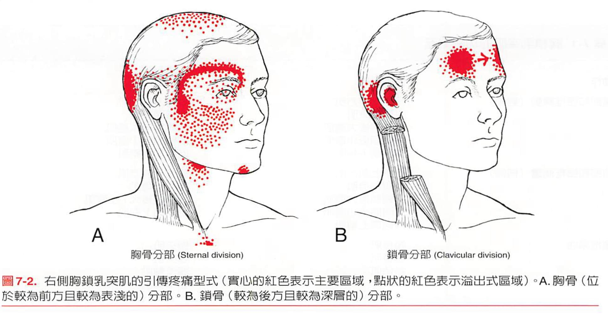

兩年無法躺睡的耳朵深處痛：胸鎖乳突肌的關鍵角色
莫名的 #耳痛
前陣子一位年輕媽媽，右耳的裡面深處疼痛，痛到沒辦法睡覺，按也按不到，每次躺下去只要快要睡著的瞬間，就會被痛醒，搞到後來只能坐著睡，但睡著後倒臥的瞬間又再次被痛醒，完全無法好好睡覺已經快兩年！
當然該檢查的都檢查了，看了4家耳鼻喉科、2家大醫院，都沒有器質性的問題。真的是不知道怎麼辦才好。
耳朵、平衡失調很大原因是高位頸椎與頭顱枕骨顳骨乳突的排列錯位或張力失衡，脈象摸完雙側寸關滑數，脈位偏浮。
於是從頭顱與高位頸椎開始檢查，在右側的SCM找到一大坨非常緊脹腫的肌束，輕捏下去直接反射式閃避，當下腦中直接閃出這張圖！心裡一陣直覺：不會吧，真的照書生病喔？
但心中又有8成的把握，於是透過2根針與手法收尾，處理完這個SCM。
隔了一週回診，患者說：終於可以好好睡覺了，這週每天都能睡，而且為了測試，還故意側躺壓右側，結果還是一覺到天亮！
就這樣，一個很幸運的機會被我撿到，2年的耳朵痛，2根針直接解決，快到我都嚇到🤯
但，讓我自己開心了好幾天🥳
上週的肌筋膜脈學中醫應用讀書會，主題之一是SCM胸鎖乳突肌，再讀一次特別有感！
現代滑手機、長時間用電腦工作追劇的人滿街上都是，上交叉的體態幾乎都有，SCM的過度收縮造成很多意想不到的症狀，頭痛、耳鳴、耳朵痛、額頭眉骨痛等等，都可以查察看胸鎖乳突肌！
太初中醫診所
中醫師 黃彥鈞
